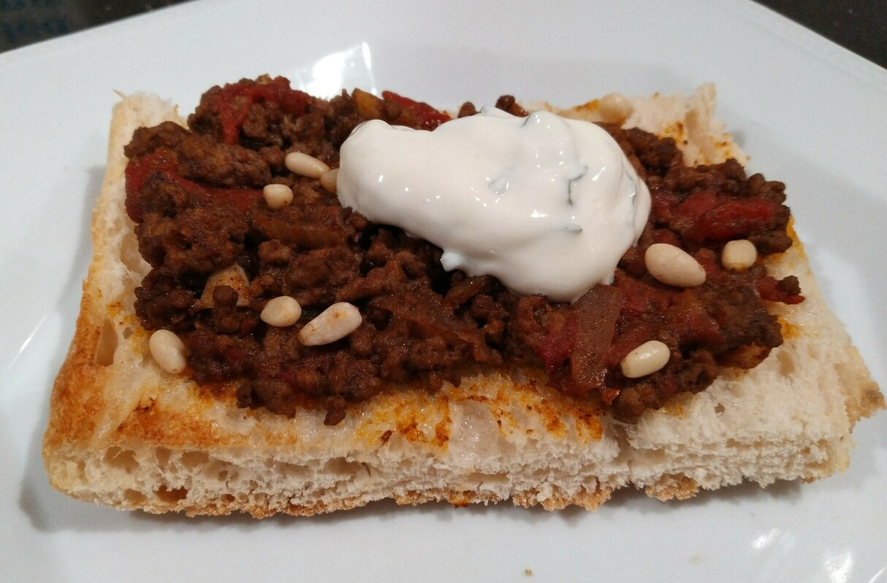

Lamb Pide
 Meat
Meat

- olive oil
- 1 brown onion
- 3 cloves of garlic
- 500g lamb mince
- 1 tsp chilli flakes
- 2 tsp ground cumin
- 1/2 tsp ground cinnamon
- 1 1/2 tsp allspice
- 2 tbsp lemon juice
- 1/2 cip of vegetable stock
- 1 can of diced tomatoes
- 1 turkish bread loaf
- pine nuts
- greek yoghurt
- mint leaves
Preheat oven to 220 degrees Heat oil in frying pan Cook onion and garlic until soft Brown lamb Add spices, juice, stock amd tomatoes Simmer unti liquid has evaporated Cut bread in half, spray with oil and toast in oven Spoon lamb mixture onto bread, sprinkle with pine nuts Cover with foil and bake for 10 mins Remove foil and bakle for a further 10 mins until lightly browned Serve with mint and yoghurt mixture
Serves 4 people. Mince can also be served with cous cous or rice